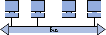

Tipologie reti informatiche
 |
In telecomunicazioni una topologia di rete è la rappresentazione della struttura geometrica di una rete di telecomunicazioni che fa parte della più generale architettura di rete. Una topologia di rete rappresenta un modello geometrico (grafo) di una rete di telecomunicazioni i cui elementi costitutivi sono i nodi e i rami. Un nodo individua un elemento della rete connotato da specifiche funzionalità (host client, host server, switch, router) e un ramo costituisce un elemento di connessione fisica fra due nodi. Il significato di queste entità geometriche è diverso a seconda del tipo di operatività che si considera. Un nodo puo' avere una o più connessioni con gli altri secondo differenti schemi. La connessione più semplice è quella a senso unico tra due dispositivi. Un secondo collegamento può essere aggiunto per abilitare una comunicazione bidirezionale. La topologia di rete è determinata soltanto dalla configurazione dei collegamenti tra i nodi. Per la precisione, non riguardano la topologia di rete: le distanze tra i nodi, le interconnessioni fisiche, le velocità di trasmissione, i tipi di segnale. |
|  bus |
 hub
hub |
| Questa Pagina è stata fatta da Ricardo Machasilla 2°A Elettronico |